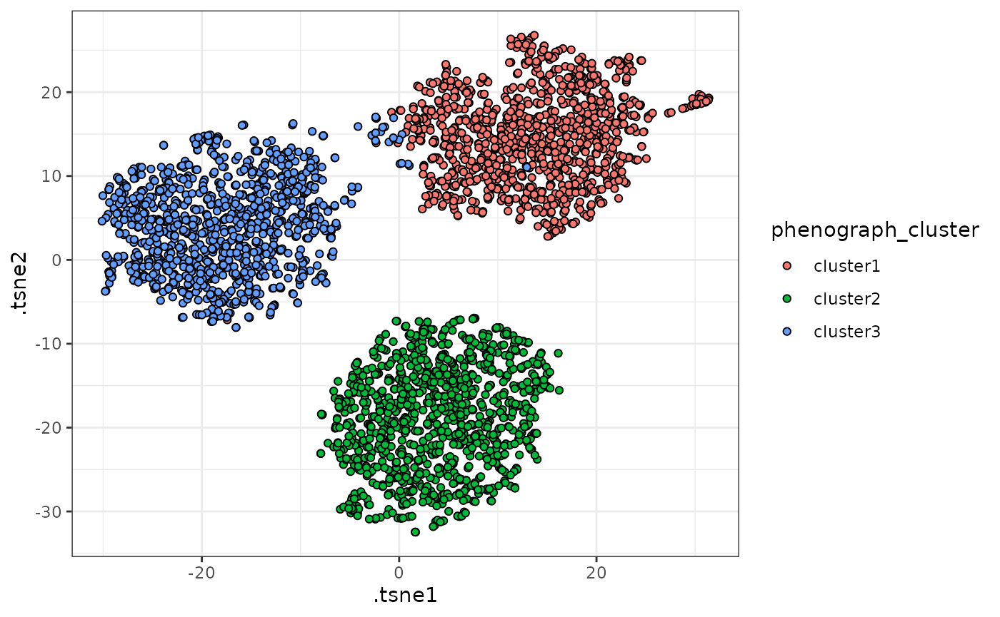
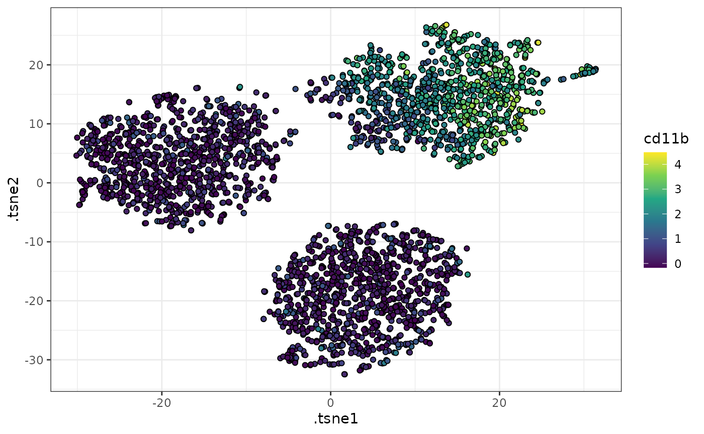

Dimensionality reduction
Timothy Keyes
2022-04-27
dimensionality-reduction.RmdA useful tool for visualizing the phenotypic relationships between single cells and clusters of cells is dimensionality reduction, a form of unsupervised machine learning used to represent high-dimensional datasets in a smaller number of dimensions.
tidytof includes several dimensionality reduction algorithms commonly used by biologists: Principal component analysis (PCA), t-distributed stochastic neighbor embedding (tSNE), and uniform manifold approximation and projection (UMAP). To apply these to a dataset, use tof_reduce_dimensions().
Dimensionality reduction with tof_reduce_dimensions().
Here is an example call to tof_reduce_dimensions() in which we use tSNE to visualize data in tidytof’s built-in phenograph_data dataset.
data(phenograph_data)
# perform the dimensionality reduction
phenograph_tsne <-
phenograph_data %>%
tof_preprocess() %>%
tof_reduce_dimensions(method = "tsne")
#> Loading required namespace: Rtsne
# select only the tsne embedding columns
phenograph_tsne %>%
select(contains("tsne")) %>%
head()
#> # A tibble: 6 × 2
#> .tsne_1 .tsne_2
#> <dbl> <dbl>
#> 1 -8.68 -6.44
#> 2 -12.4 0.948
#> 3 -39.0 7.27
#> 4 -22.9 0.949
#> 5 -23.2 -8.26
#> 6 -23.6 10.5By default, tof_reduce_dimensions will add reduced-dimension feature embeddings to the input tof_tbl and return the augmented tof_tbl (that is, a tof_tbl with new columns for each embedding dimension) as its result. To return only the features embeddings themselves, set augment to FALSE (as in tof_cluster).
phenograph_data %>%
tof_preprocess() %>%
tof_reduce_dimensions(method = "tsne", augment = FALSE)
#> # A tibble: 3,000 × 2
#> .tsne_1 .tsne_2
#> <dbl> <dbl>
#> 1 -12.1 1.89
#> 2 -16.5 -0.660
#> 3 -17.2 -26.3
#> 4 -18.2 -9.03
#> 5 -12.3 -3.77
#> 6 -17.7 -13.4
#> 7 -13.5 -8.21
#> 8 -12.8 -18.9
#> 9 -19.2 -11.2
#> 10 -18.1 5.27
#> # … with 2,990 more rowsChanging the method argument results in different low-dimensional embeddings:
phenograph_data %>%
tof_reduce_dimensions(method = "umap", augment = FALSE)
#> # A tibble: 3,000 × 2
#> .umap1 .umap2
#> <dbl> <dbl>
#> 1 10.0 -2.18
#> 2 8.85 -2.06
#> 3 6.20 -0.354
#> 4 4.38 1.21
#> 5 9.99 -1.93
#> 6 -0.0135 3.61
#> 7 9.92 -1.43
#> 8 5.84 0.319
#> 9 5.06 -1.52
#> 10 9.58 -4.37
#> # … with 2,990 more rows
phenograph_data %>%
tof_reduce_dimensions(method = "pca", augment = FALSE)
#> # A tibble: 3,000 × 5
#> .pc1 .pc2 .pc3 .pc4 .pc5
#> <dbl> <dbl> <dbl> <dbl> <dbl>
#> 1 -2.77 1.23 0.868 0.978 3.49
#> 2 -0.969 -1.02 0.787 1.22 0.329
#> 3 -2.36 2.54 1.95 -0.882 -1.30
#> 4 -3.68 -0.00565 -0.962 0.410 0.788
#> 5 -4.03 2.07 0.829 1.59 5.39
#> 6 -2.59 -0.108 -1.32 -1.41 -1.24
#> 7 -1.55 -0.651 0.233 1.08 0.129
#> 8 -1.18 -0.446 -0.134 -0.771 -0.932
#> 9 -2.00 -0.485 -0.593 -0.0416 -0.658
#> 10 -0.0356 -0.924 0.692 1.45 0.270
#> # … with 2,990 more rowsMethod specifications for tof_reduce_*() functions
tof_reduce_dimensions() provides a high-level API for three lower-level functions: tof_reduce_pca(), tof_reduce_umap(), and tof_reduce_tsne(). The help files for each of these functions provide details about the algorithm-specific method specifications associated with each of these dimensionality reduction approaches. For example, tof_reduce_pca takes the num_comp argument to determine how many principal components should be returned:
# 2 principal components
phenograph_data %>%
tof_reduce_pca(num_comp = 2)
#> # A tibble: 3,000 × 2
#> .pc1 .pc2
#> <dbl> <dbl>
#> 1 -2.77 1.23
#> 2 -0.969 -1.02
#> 3 -2.36 2.54
#> 4 -3.68 -0.00565
#> 5 -4.03 2.07
#> 6 -2.59 -0.108
#> 7 -1.55 -0.651
#> 8 -1.18 -0.446
#> 9 -2.00 -0.485
#> 10 -0.0356 -0.924
#> # … with 2,990 more rows
# 3 principal components
phenograph_data %>%
tof_reduce_pca(num_comp = 3)
#> # A tibble: 3,000 × 3
#> .pc1 .pc2 .pc3
#> <dbl> <dbl> <dbl>
#> 1 -2.77 1.23 0.868
#> 2 -0.969 -1.02 0.787
#> 3 -2.36 2.54 1.95
#> 4 -3.68 -0.00565 -0.962
#> 5 -4.03 2.07 0.829
#> 6 -2.59 -0.108 -1.32
#> 7 -1.55 -0.651 0.233
#> 8 -1.18 -0.446 -0.134
#> 9 -2.00 -0.485 -0.593
#> 10 -0.0356 -0.924 0.692
#> # … with 2,990 more rowssee ?tof_reduce_pca, ?tof_reduce_umap, and ?tof_reduce_tsne for additional details.
Visualization using tof_plot_cells_embedding()
Regardless of the method used, reduced-dimension feature embeddings can be visualized using ggplot2 (or any graphics package). tidytof also provides some helper functions for easily generating dimensionality reduction plots from a tof_tbl or tibble with columns representing embedding dimensions:
# plot the tsne embeddings using color to distinguish between clusters
phenograph_tsne %>%
tof_plot_cells_embedding(
embedding_cols = contains(".tsne"),
color_col = phenograph_cluster
)
# plot the tsne embeddings using color to represent CD11b expression
phenograph_tsne %>%
tof_plot_cells_embedding(
embedding_cols = contains(".tsne"),
color_col = cd11b
) +
ggplot2::scale_fill_viridis_c()
Such visualizations can be helpful in qualitatively describing the phenotypic differences between the clusters in a dataset. For example, in the example above, we can see that one of the clusters has high CD11b expression, whereas the others have lower CD11b expression.